Function (ℝ)
Numeric Array
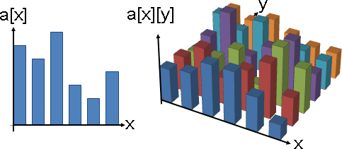陣列相信大家耳熟能詳。各個整數位置，各有一個數值。
Numeric Function
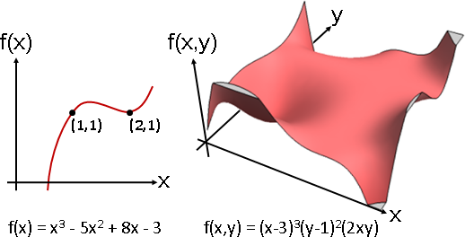Plot3D[(x-3)*(x-3)*(x-3)*(y-1)*(y-1)*2*x*y, {x, -0.1, 4.4}, {y, -0.2, 1.5}, PlotRange -> {-3, 3}, Boxed -> False, Axes -> False, ColorFunction -> "SolarColors"]
函數的概念，請參考本站文件「Function」。此處僅專注於有著數值、有得計算的函數。函數可以想成是陣列的連續版本。
Function可以畫成圖形
窮舉各種輸入，分別計算輸出，把輸入與輸出化作座標位置。
一元函數和二元函數容易作圖，三元函數就只能用空氣濃度來呈現函數值了，四元以上只能用幻想的。

Plot3D[Sin[x * y] * Cos[x + y], {x, -Pi, Pi}, {y, -Pi, Pi}, PlotRange -> {-2, 2}, Boxed -> False, Axes -> False, ColorFunction -> (ColorData["CherryTones"][Rescale[#3, {-2, 2}]] &) ]
Function Operation
函數就和實數、複數一樣，有著各種運算。以下將介紹函數的運算：求值、代入、加、減、乘、除、模、複合、微、積。
operation (noun) operation (verb) result (noun)
----- -------------------- ------------------ --------------
let = evaluation 求值 evaluate 求值 value 值
let = substitution 代入 substitute 代入 expression 式
+ addition 加法 add 加 sum 和
- subtraction 減法 subtract 減 difference 差
multiplication 乘法 multiply 乘 product 積
/ division 除法 divide 除 quotient 商
mod modulo 模 --- 模 remainder 餘
∘ composition 複合 compose 複合 composite function 複合函數
d/dx differentiation 微分 differentiate 微 derivative 導
∫ dx integration 積分 integrate 積 integral 積分
求值
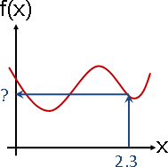給定輸入數值，計算輸出數值。屬於數值計算。
代入
輸入變數替換為其他變數。屬於符號計算。
x = s + 2
sin x cos y y = t / 2 sin(s + 2) cos(t / 2)
f(x, y) = ————— + ————— ==========> f(s, t) = —————————— + ——————————
y x t / 2 s + 2
加減乘除模
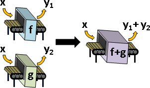如果經常要把兩個函數的輸出加在一起，可以預先把兩個函數加在一起，得到新函數，節省計算時間！
兩個函數 f(x) = x² + x + 1 g(x) = -x + 2 輸入數值是1的時候，計算所有函數輸出數值的總和 f(1) = 1² + 1 + 1 = 3 g(1) = -1 + 2 = 1 f(1) + g(1) = 3 + 1 = 4 輸入數值是2的時候，計算所有函數輸出數值的總和 f(2) = 2² + 2 + 1 = 7 g(2) = -2 + 2 = 0 f(2) + g(2) = 7 + 0 = 7
如果預先讓函數相加的話
(f + g)(x) = f(x) + g(x)
= (x² + x + 1) + (-x + 2)
= x² + 3
那麼就可以節省計算時間
(f + g)(1) = 1² + 3 = 4
(f + g)(2) = 2² + 3 = 7
輸入越多種、函數越多個，節省越多時間！
用抽象的、簡潔的數學符號表達函數加法：
f + g
用直觀的、亮麗的函數圖形表達函數加法：
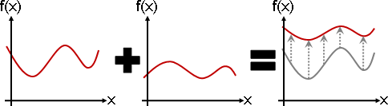加減乘除模概念相仿，其餘運算就不多提了。
複合
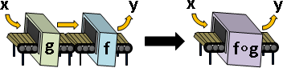如果輸入經常接連地用函數變換兩次，可以預先把兩個函數複合在一起，得到新函數，節省計算時間！
兩個函數 f(x) = x² + x + 1 g(x) = -x + 2 輸入數值是1的時候，計算先經過g函數、再經過f函數的輸出數值 g(1) = -1 + 2 = 1 f(g(1)) = f(1) = 1² + 1 + 1 = 3 輸入數值是2的時候，計算先經過g函數、再經過f函數的輸出數值 g(2) = -2 + 2 = 0 f(g(2)) = f(0) = 0² + 0 + 1 = 1
如果預先讓函數複合的話
(f ∘ g)(x) = f(g(x))
= (-x + 2)² + (-x + 2) + 1
= x² - 5x + 7
那麼就可以節省計算時間
(f ∘ g)(1) = 1² - 5 + 7 = 3
(f ∘ g)(2) = 2² - 10 + 7 = 1
輸入越多種、函數越多個，節省越多時間！
用抽象的、簡潔的數學符號表達函數複合：
f ∘ g
用直觀的、亮麗的函數圖形表達函數複合？我不會畫。
微分
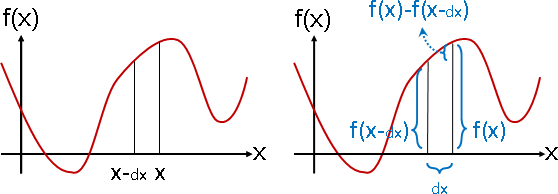相鄰數字差，通通除以dx，得到新函數。
請讀者參考本站文件「Sequence」提及的離散版本。此處介紹的是連續版本，只多了個dx：一個無限微小、略大於零的數值。
用抽象的、簡潔的數學符號表達函數微分：
d —— f 輸入變數剛好一個 dx ∂ —— f 輸入變數大於一個 ∂x
用直觀的、亮麗的函數圖形表達函數微分：
當輸入變數只有一個，導數是座標(x,f(x))的「斜率slope」。當輸入變數有許多個，各個輸入變數分別求得斜率，合稱「梯度gradient」。
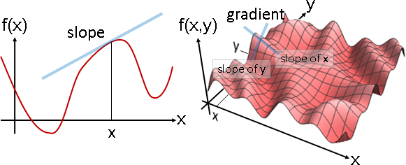積分
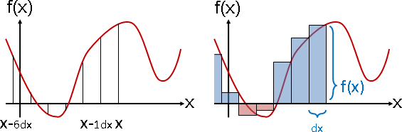從負無限大開始的連續數字和，通通乘以dx，得到新函數。
用抽象的、簡潔的數學符號表達函數積分：
∫ f dx
用直觀的、亮麗的函數圖形表達函數積分：
當輸入變數只有一個，積分是左至-∞、右至x、下至0、上至f(x)，四個邊界所包圍的「面積area」，面積可正可負。當輸入變數有許多個，各個輸入變數一齊累計，得到「容積volume」。
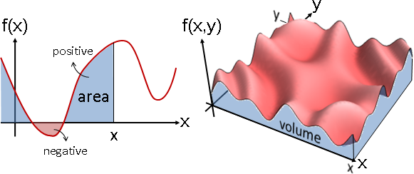函數積分最簡單的演算法是Rectangle Rule：按照定義來，將面積切割成數條寬度為dx的矩形。
然而，左至負無限大，演算法永不結束，怎麼辦？解決方式是增設左邊界，想訂多少就多少。數學家把「自訂左右邊界的積分運算」的結果叫做「定積分definite integral」。
對計算學家來說，定積分就是區間和啦。前綴和改成區間和，就這樣而已。
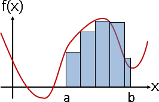矩形畢竟不是無限薄。當函數是斜線，仍有縫隙。只好改用Trapezoidal Rule：將面積切割成數條寬度為dx的梯形。
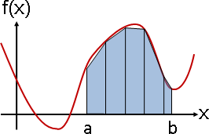當函數是曲線，仍有縫隙。只好改用Parabolic Rule又稱Simpson's Rule：梯形的斜邊改成拋物線。
長方形的邊是零次、梯形的斜邊是一次、拋物線是二次。當函數是三次曲線，仍有縫隙。無論如何修正，只要函數是更高次曲線就仍有縫隙，況且運算量也更大了。只好改用Adaptive Simpson's Rule：dx最初是b-a；當縫隙太大，就讓dx變成一半。
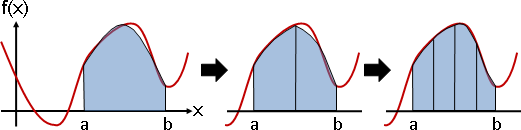有些區間已經幾乎沒有縫隙，大可不必再切半。
函數起起伏伏，難以估量縫隙大小。只好比較前後算得的面積，當面積差異足夠小，就推定面積已經足夠準確、足夠穩定了。
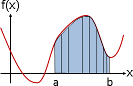UVa 1356 1280 12528 ICPC 3001